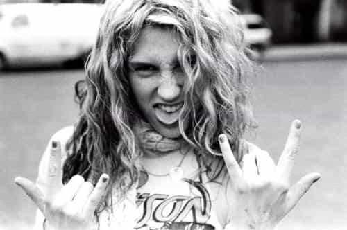

< < < Back
The Party Slut Anthem – Return Of Kings
Beethoven once said that music is a higher revelation than all wisdom and philosophy. That’s a nice way of saying that it’s a great way to determine where people are, at least culturally. There is no hiding behind music because it’s an expressive art form, and some songs in particular almost become anthems for many generations or the sub cultures that develop around them. Think of the Sex Pistols, Bob Dylan or The Beatles. Bands and artists that produce popular music and songs can truly reveal people for who they are at that time.
So it’s not without a few chuckles that I reveal the average party slut (i.e., 99.9% of the female population under 27). If ever you were in doubt over their gradual descent into whoredom and the glorification of everything that is the quintessential narcissistic slut, then you never have to look any further than Ke$ha.
Tik Tok went five times platinum, which means she sold over 6 million singles just in the USA. People liked it so much they were buying it instead of stealing it. Mindless drivel it may be, Kesha produced an anthem for the “you go girl” generation that sums up their finest qualities in a way few could. She is a cultural cliche so obnoxious I am astounded that she has seen any success at all, but given what her songs reveal, perhaps it should come as no surprise.
Lets see how much her silly song reflects on the reality of the modern day party gal you bump into most weekends:
Wake up in the morning feeling like P Diddy
(Hey, what up girl?)
Grab my glasses, I’m out the door, I’m gonna hit this city
(Lets go)
Before I leave, brush my teeth with a bottle of Jack
‘Cause when I leave for the night, I ain’t coming back
This sums up the herd mentality of the average, degenerate, cum bucket better than most things I can think of. It’s almost poetic.
The best part about this introduction to her pop hit is that she does not say the word “teeth” properly. She felt the compulsion to use the word “teef” instead, in an effort to street this shit up with her white girl ebonics. It’s not that she has just proudly told the world she is a stuck-up bitch who is in love with herself, or even that she is still hung over yet getting ready for another massive night out. No, with that simple intro, we can all rest easy knowing that this talentless parrot is about to launch into a million cliches as she begins what is an anthem to the super awesome whore validation that is thrust upon us on a daily basis.
Party girl is…
- Easily influenced
- Vapid
- Vain
- Drunk
- Irresponsible
- Immature

I’m talking pedicure on our toes, toes
Trying on all our clothes, clothes
Boys blowing up our phones, phones
Drop-topping, playing our favorite CDs
Pulling up to the parties
Trying to get a little bit tipsy
This is a Sex in the City level inspired girl power orgasm so intense its almost as if she is talking about a lubed up, 12 inch vibrating dildo that is hitting her G spot. She is so overcome with self-love it sounds like she wants to make love to herself, and she wants the whole world to know it. There is just no way this awesome party chick can go an entire night without everyone she meets thinking she is awesome. All the boys are calling her. She has a million places to go. So many outfits to choose from.
I’m not going to lie, I almost came in pants myself because it sounds so awesome. The power she displays really gets me wet. One would think that this woman must be a 10/10. If we were to place her under a microscope, we would surely be able to see gods fingerprints on her.
Party girl is…
- Getting railed by half the town
- Unsure of what slutty outfits to wear next as she looks for fresh penis
- Extremely narcissistic
- Entitled
- Selfish
- DELUSIONAL
Don’t stop, make it pop
DJ, blow my speakers up
Tonight, I’mma fight
‘Til we see the sunlight
Tick tock on the clock
But the party don’t stop, no
Oh the cliches. The damn cliches. The one long, non-stop train wreck of cliches.
I wont repeat the chorus that sold millions of singles again. I cant believe she thinks the world should see her shake her fat ass. I just cant help but wonder how it all came to this. Why is there the need to be the “hard clubber” who views having fun almost like it’s a job? Why the constant pressure to make sure the night produced 20 million Facebook photos as she attention whores for any validation she can get? Who the hell would actually walks into a club like they have something to prove, and then makes a song about it singing to the world how awesome they are?
Party girl is…
- Stupid. Mentally handicapped level stupid
- An attention whore
- Insecure and seeks endless social validation
- Trendy to the point where she is basically a social drone
- Lacks any creativity or individualism at all

Ain’t got a care in world, but got plenty of beer
Ain’t got no money in my pocket, but I’m already here
And now, the dudes are lining up cause they hear we got swagger
But we kick em to the curb unless they look like Mick Jagger
I’m talking about everybody getting crunk, crunk
Boys tryin’ to touch my junk, junk
Gonna smack him if he getting too drunk, drunk
Oh good lord. I cant believe they put us in jail for beating girls like this.
Party girl…
- Is a bum trying to score free drinks
- Is so masculine she now considers access to beer as an important safety net
- Knows there are a ton of thirsty guys lining up for her, despite being a fat trainwreck with no redeeming qualities
- Feels she is a rock god despite being an obese heffer
- Is as drunk on the attention as she is the free alcohol her slut outfit got her
- Is grinding half the club like a washed up stripper, yet complains about getting attention
- Is getting fat with all the beer and junk food

Now, now, we go until they kick us out, out
Or the police shut us down, down
Police shut us down, down
Po-po shut us
There it goes with the ebonics again. A bit of a background check shows that she is the proud owner of Eastern European ancestry and was raised in Nashville where she attended a middle class white schools. They actually let these simpletons vote. Hell, this simpleton is running around with millions because morons play her music, buy her music and go to her concerts, even though she is a poser.
Sadly, Kesha manages to perfectly capture an entire generation of women, not by singing about them or breaking any boundaries, but by producing such a narcissistic piece of shit that it could have been written by any party slut out there really.
Here is another picture of what it means to be a party slut with a point to prove. She was not even 25 when these were taken. Just think of how many Keshas there are running around right now that are going to expect a man to settle down with them when they are in their 30’s.
Read More: Having Sex In Iceland Can Destroy Your Soul